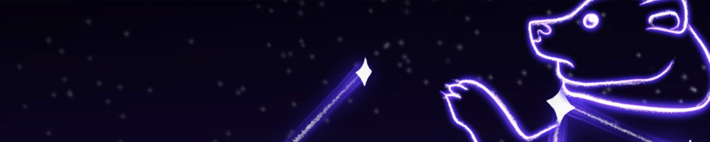

The Little Dog
Roles:
Level Design, Narrative Design, Programming

Constellation-inspired levels

Platforming

Narrative scenes

The Little Dog was a game inspired by the constellations and Greco-Roman mythology, The Little Dog follows "Canis Minor", as they seek to fix the night sky and reunite with their master, Orion.
Dalton worked to turn static constellations into playable levels and tie the constellations together in a linear narrative. He also helped with some animation using Adobe Animate.